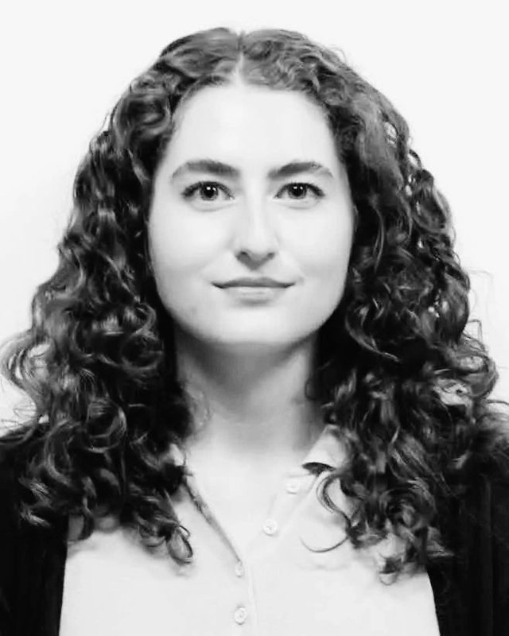
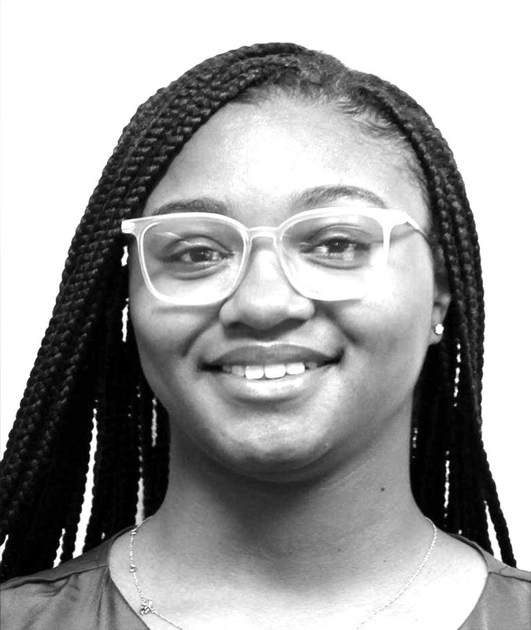
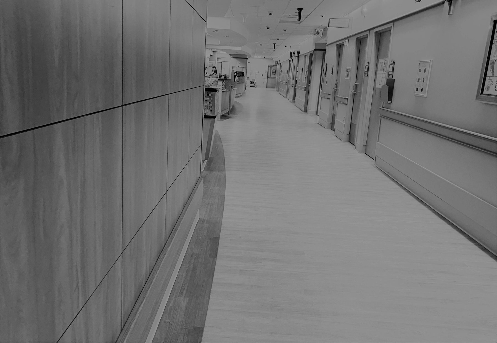

Birmingham, AL
About Us
Our Mission
Our experienced multidisciplinary team puts your baby’s needs first by discovering and applying new knowledge in neonatal nutrition research. We are proud to provide a high-quality level of research opportunities, medical experience, and commitment to health to all our study participants. Our goal is to close the gap between new discoveries and current feeding practices and thus, help premature babies reach their full potential.
Experience and Professionalism
With years of experience, we have selected a limited number of nutritional interventions with the most significant potential to improve your baby’s outcomes. Our research team will assess your eligibility to participate in nutrition studies and explain how your baby and others could benefit from our innovative approaches to improve the growth and developmental outcomes of premature babies. We know it is essential for you to understand why there is a need to test new feeding methods during early infancy.
Health Care Professionals Who Care
We understand that having a premature baby in the neonatal unit is often unexpected and stressful. We strive to give you early access to novel therapies that could improve your baby’s quality of life. However, we understand that the choice of being part of a research study can be overwhelming. When you choose not to participate in research studies, you should rest assured that our commitment to provide the best care for your baby remains the same.
The Team
Ariel A. Salas, MD, MSPH
Neonatologist
Dr. Salas is a neonatologist. He completed his second pediatrics residency at Children’s Hospital of Philadelphia and a neonatology fellowship at UAB. He manages our team and makes sure all our backgrounds work together to help support your baby’s nutrition goals.
Find out more about Ariel A. Salas
Seabrook Jeffcoat, MSPH
Clinical research coordinator
Seabrook is a clinical research coordinator. She assists with data curation and data analysis.

Taylor Brown, BS
Clinical research coordinator
Taylor is an experienced neonatal feeding specialist and a clinical research coordinator. She is responsible for the day-to-day research activities including screening, recruitment, data collection, sample processing, and others.
Tori Argent, MS, RDN
Neonatal dietitian
Tori is a neonatal dietitian who has the knowledge and skills to combine innovative nutritional interventions with routine clinical practice.
Lyana Drewry
Clinical research coordinator
Lyana is a clinical research coordinator with a background in marketing and logistics.
Suraj Singh, MD
Pediatrician & Neonatal-Perinatal Medicine fellow
Suraj is a pediatrician and Neonatal-Perinatal Medicine fellow whose research focuses on how early nutrition shapes growth, neonatal outcomes, and long-term health. His academic interests also include neonatal respiratory physiology and bronchopulmonary dysplasia.
Onur Erk Taparli, MD
Pediatrician & Neonatal-Perinatal Medicine fellow
Onur is a pediatrician and Neonatal-Perinatal Medicine fellow whose research focuses on how early nutrition in the NICU shapes brain development and long-term outcomes for vulnerable newborns.

Areas of Specialty
Body composition and growth outcomes
Our research team aims to improve quantitative and qualitative outcomes of growth in premature babies.
Feeding practices
We have developed multiple feeding protocols to improve nutrition practices in premature babies.
Oral feeding
We have also made substantial contributions to facilitate the transition from tube to oral feeding in premature babies. We instrumented a feeding bottle to assess nutritive sucking patterns (number of sucks, sucking strength, sucking density, and bottle orientation).